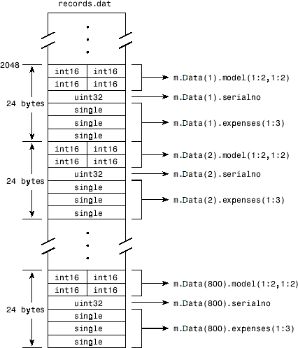
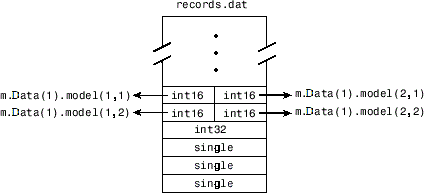

Map File to Memory
Create a Simple Memory Map
Suppose you want to create a memory map for a file named records.dat,
using the memmapfile function.
Create a sample file named records.dat, containing
5000 values.
rng('default') myData = rand([5000,1]); fileID = fopen('records.dat','w'); fwrite(fileID, myData,'double'); fclose(fileID);
Next, create the memory map. Use the Format name-value
pair argument to specify that the values are of type double.
Use the Writable name-value pair argument to allow
write access to the mapped region.
m = memmapfile('records.dat', ... 'Format', 'double', ... 'Writable', true)
m =
Filename: 'd:\matlab\records.dat'
Writable: true
Offset: 0
Format: 'double'
Repeat: Inf
Data: 5000x1 double arrayMATLAB® creates a memmapfile object, m.
The Format property indicates that read and write
operations to the mapped region treat the data in the file as a sequence
of double-precision numbers. The Data property
contains the 5000 values from the file, records.dat.
You can change the value of any of the properties, except for Data,
after you create the memory map, m.
For example, change the starting position of the memory map, m.
Begin the mapped region 1024 bytes from the start of the file by changing
the value of the Offset property.
m.Offset = 1024
m =
Filename: 'd:\matlab\records.dat'
Writable: true
Offset: 1024
Format: 'double'
Repeat: Inf
Data: 4872x1 double arrayWhenever you change the value of a memory map property, MATLAB remaps
the file to memory. The Data property now contains
only 4872 values.
Specify Format of Your Mapped Data
By default, MATLAB considers all the data in a mapped file
to be a sequence of unsigned 8-bit integers. However, your data might
be of a different data type. When you call the memmapfile function,
use the Format name-value pair argument to indicate
another data type. The value of Format can either
be a character vector that identifies a single class used throughout
the mapped region, or a cell array that specifies more than one class.
Suppose you map a file that is 12 kilobytes in length. Data
read from this file can be treated as a sequence of 6,000 16-bit (2-byte)
integers, or as 1,500 8-byte double-precision floating-point numbers,
to name just a few possibilities. You also could read this data as
a combination of different types: for example, as 4,000 8-bit (1-byte)
integers followed by 1,000 64-bit (8-byte) integers. You can determine
how MATLAB will interpret the mapped data by setting the Format property
of the memory map when you call the memmapfile function.
MATLAB arrays are stored on disk in column-major order. The sequence of array elements is column 1, row 1; column 1, row 2; column 1, last row; column 2, row 1, and so on. You might need to transpose or rearrange the order of array elements when reading or writing via a memory map.
Map Multiple Data Types and Arrays
If the region you are mapping comprises segments of varying
data types or array shapes, you can specify an individual format for
each segment. Specify the value of the Format name-value
pair argument as an n-by-3 cell array, where n is
the number of segments. Each row in the cell array corresponds to
a segment. The first cell in the row identifies the data type to apply
to the mapped segment. The second cell contains the array dimensions
to apply to the segment. The third cell contains the field name for
referencing that segment. For a memory map, m,
use the following syntax:
m = memmapfile(filename, ... 'Format', { ... datatype1, dimensions1, fieldname1; ... datatype2, dimensions2, fieldname2; ... : : : ... datatypeN, dimensionsN, fieldnameN})
Suppose you have a file that is 40,000 bytes in length. The
following code maps the data beginning at the 2048th byte. The Format value
is a 3-by-3 cell array that maps the file data to three different
classes: int16, uint32, and single.
m = memmapfile('records.dat', ... 'Offset', 2048, ... 'Format', { ... 'int16' [2 2] 'model'; ... 'uint32' [1 1] 'serialno'; ... 'single' [1 3] 'expenses'});
In this case, memmapfile maps the int16 data
as a 2-by-2 matrix that you can access using the field name, model.
The uint32 data is a scalar value accessed using
the field name, serialno. The single data
is a 1-by-3 matrix named expenses. Each of these
fields belongs to the 800-by-1 structure array, m.Data.
This figure shows the mapping of the example file. Starting at the 2048th byte, 24-byte
segments of data are mapped to the specified classes, sizes, and names. You can
access data in segment i by using
m.Data(i)., where
fieldnamei is in the range [1, 800].

The next figure shows the ordering of the array elements more closely. In particular, it illustrates that MATLAB arrays are stored on the disk in column-major order. The sequence of array elements in the mapped file is row 1, column 1; row 2, column 1; row 1, column 2; and row 2, column 2.

If the data in your file is not stored in this order, you might need to transpose or rearrange the order of array elements when reading or writing via a memory map.
Select File to Map
You can change the value of the Filename property
at any time after constructing the memmapfile object.
You might want to do this if:
You want to use the same
memmapfileobject on more than one file.You save your
memmapfileobject to a MAT-file, and then later load it back into MATLAB in an environment where the mapped file has been moved to a different location. This requires that you modify the path segment of theFilenameto represent the new location.
Update the path in the Filename property
for a memory map using dot notation. For example, to specify a new
path, f:\testfiles\records.dat for a memory map, m,
type:
m.Filename = 'f:\testfiles\records.dat'